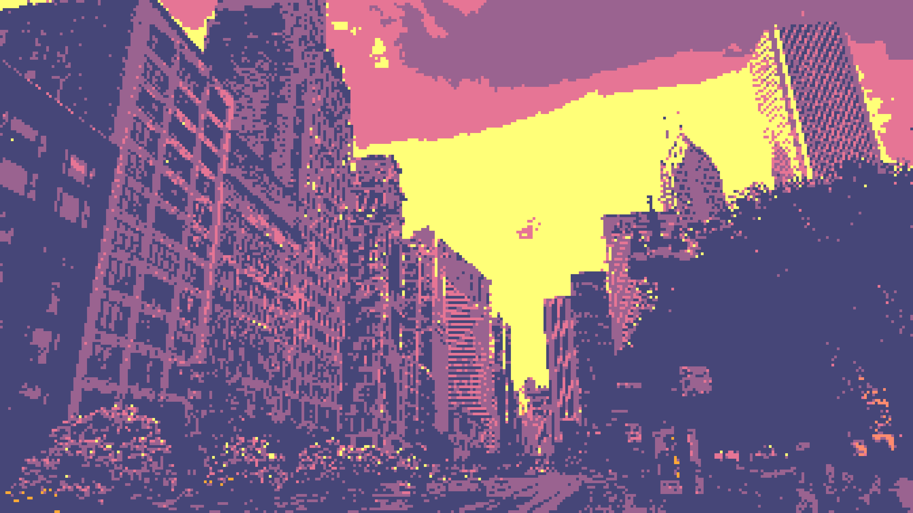
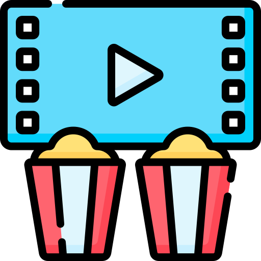
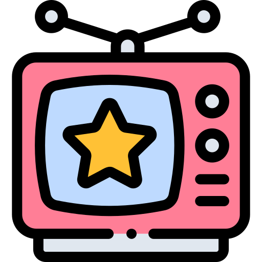

Home
About
Me
My Travels
My Trip Blogs
My Current Fixations
My Wild India
Memoirs of a Vagabond
Timeline
Research
Software
Talks
Publications
CV
Contact
☀
🪐
♫
enable light mode
My Current Fixations
All
Books

Movies

Shows
Games
Nothing here yet.